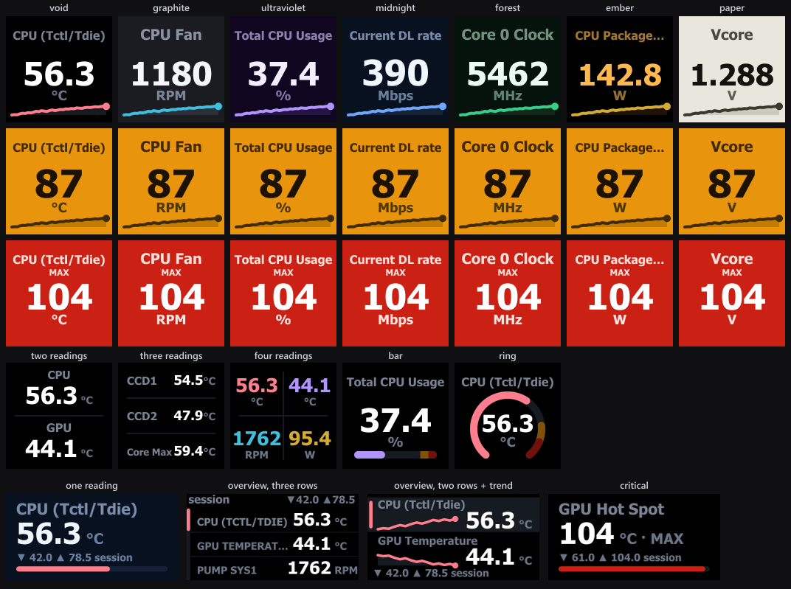
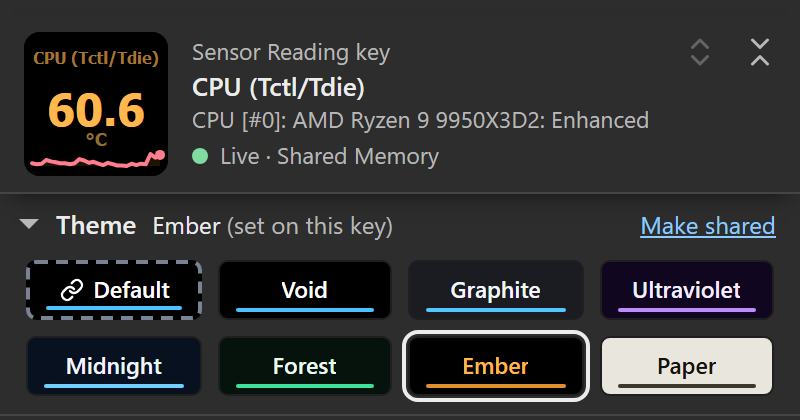
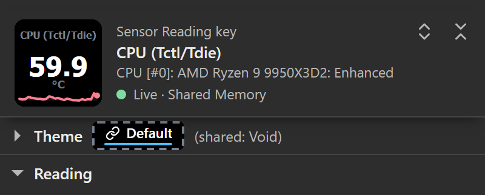
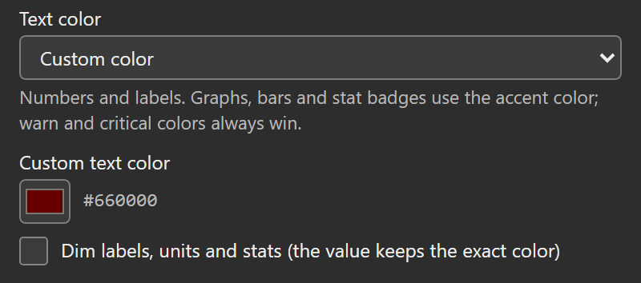

Seven themes control the background, text, graphs and dividers. Set a theme per key or dial, or pick Default to follow the shared theme. Type accents color graphs and indicators by sensor category. Alerts take priority over normal colors. A dial’s Background can let the touch strip picture show instead of the theme’s background (Transparent background).
This page describes 1.7. See what changed from 1.6.
The seven presets
Pick a theme from the theme strip under the header in any key’s or dial’s settings: it opens on a first visit, every chip shows the theme’s colors with its name written on it, and the line above the chips says which theme is drawn and where it comes from. It folds like any section; folded, its line keeps the checked theme as a small chip in that theme’s colors, beside where it comes from.
| Preset | Character |
|---|---|
| Void (default) | Black background (#000000), white values. |
| Graphite | Dark slate background (#1A1C22). The default for installs configured before themes were added. |
| Ultraviolet | Dark violet background, lavender accent. |
| Midnight | Dark blue background, light blue accent. |
| Forest | Dark green background, green accent. |
| Ember | Black background, amber text and accent. |
| Paper | Light background (#E9E6DE), dark text. |

See the reading-color examples for the dial’s own number colors.
Note: New installs start on Void. Installs configured before themes were added keep Graphite as the shared theme. Selecting a shared theme replaces that default.
The display system
Each layout uses fixed positions across themes. A one-reading key puts its label on baseline 32, value on 94 and unit on 114. The multi-reading layouts use their own grids. Renderer tests check these positions.
Since 1.7, built-in value, unit and numeric session-statistic text colors are checked for at least 4.5:1 contrast against their authored backgrounds, and in Dim a label is kept at least as readable as its unit. The floor does not apply to badges, to a Custom Text color, or to individually chosen dial, quad cell and tile colors (a valid Custom Text color replaces those chosen colors while it is set). On a dial with Background set to Glass, the authored background is the glass panel over pure white (over pure black for Paper), the hardest any picture behind the strip can make it; with Tint or Outline it is the 1 px outline around each word. Clear draws text straight on the picture, where the floor does not apply. See Transparent background. Physical readability still needs device testing.
The illustrated boards use production renderers with sample scenarios, live inputs and generated histories. They are sample-data renders. Settings-panel captures and hardware photographs are identified separately.
Per-key vs. shared
Every key and dial has its own Theme setting. You can:
- Set a preset per key/dial: that key uses exactly that theme, ignoring everything else.
- Follow the shared default: the key uses whatever the shared theme is, so changing that one setting changes every key and dial set to Default.
Set the shared theme under Advanced → Shared defaults → Theme in any key’s or dial’s settings. It is one value for the whole plugin: every HWiNFO key and dial on every Stream Deck that is set to Default follows it, which is why the panel marks it All keys and dials.
Precedence
The rule: a per-key theme always wins. The shared theme only affects keys and dials set to Default.
The “Default” chip
The theme strip under the panel’s header leads with a Default chip (called Deck default before this release; the stored setting is unchanged), followed by the seven presets. Click it to make that key follow the shared theme instead of pinning a preset. Folded, the strip is one row: the checked theme as a small chip in its own colors (Default with its link mark and dashed frame), then where it comes from, such as (shared: Void).
That chip is drawn in the colors of the shared theme it resolves to, so its colors match the preset it currently follows. What tells the two apart:
- the Default chip has a dashed frame and reads Default after a small link mark (a drawn glyph in the followed theme’s text color, not an emoji),
- the line above the chips names the theme it draws and where that comes from (Default (shared: Void)), with Change beside it, which opens Advanced → Shared defaults at its Theme select. A key with its own theme reads, for example, Ember (set on this key), and a dial Ember (set on this dial).
To make a theme you picked on a key the shared theme, press Make shared on the theme line. It takes Change’s place when the key’s own theme differs from the shared one (not on Default, and not when the stored theme is unknown). The theme becomes the shared theme for every key and dial set to Default, and the key or dial goes back to Default and keeps drawing it.

The folded Display section’s summary marks inherited choices too: theme text (shared) is the shared Text color, a text color without the mark is the key’s or dial’s own.


Text: Theme, Dim, or Custom
The dark themes use bright near-white values, and Ember uses amber. Both can be too much in a dark room or for light-sensitive eyes, so every key and dial has a Text color setting at the top of its Display section, with a shared default under Advanced → Shared defaults → Text color:
- Theme text (the shared default): the selected theme’s own text colors.
- Dimmed: lower-intensity text. Built-in value, unit and numeric session-statistic colors retain a 4.5:1 authored contrast floor, including on the selected dial row, and labels stay at least as readable as units, so the selected row’s name never reads dimmer than its neighbours; the accent bar marks the selection. Individually chosen dial, quad cell and tile colors are dimmed without that adjustment.
- Custom color: your own color. Custom text color sets it, and the main value uses it exactly as picked, never adjusted. Dim labels, units and stats decides the secondary text: ticked, labels, units, suffixes and MIN/MAX/AVG badges take the same hue at lower intensity; unticked, every textual element uses the exact color.
Per-key and per-dial settings default to Default, which follows the shared Text color (the option names it, e.g. Default (shared: Dimmed)); a local Theme text, Dimmed or Custom color wins over it, mirroring the theme precedence rule. An invalid custom color falls back to theme text, and the Display summary then says theme text rather than naming a color that is not drawn.
Text color and accents are separate settings: the numbers take the text color, while graphs, bars, rings and MIN/MAX/AVG badges take the accent (issue #31 asked why numbers stayed white with type accents on). To color the numbers, set Text color to Custom color.
Automatic quad identity colors adjust for their background when needed, including after moving readings in a custom detail list. Individually chosen quad cell and detail tile colors render exactly in Theme mode and are only dimmed in Dim mode. Custom text retains your exact color and can fall below the contrast floor; choose a readable foreground for your theme. Authored contrast does not establish recognition speed on a physical key.

The setting recolors text only. Backgrounds, theme and type accents, sparklines, bars, rings, range bars, tracks and separators keep their theme colors, status screens keep their fixed safety colors, and the alert palettes always override it: a warning key is amber with black text whatever Text color says, and a dial’s alert-colored bar or overview row value is never recolored.
1.7 adds individual reading colors to two-row and three-row dials. Use Text color: Theme text for exact chosen hues, or Dimmed to dim them; a valid Custom color retains priority. Individual colors work with Accent colors: Theme accent everywhere, so you can color numbers while keeping your existing graph colors. These controls also appeared in the issue #31 preview and are absent from 1.6.0.
Text font
Advanced → Shared defaults → Text font sets the font of every Sensor Reading key, Sensor Dial and detail tile, on every Stream Deck (the HWiNFO Control key keeps its fixed Tahoma icon):
- Tahoma (the default): the bold font every release has drawn on the device. Numbers and labels are heavy and wide, so long labels shorten sooner.
- Segoe UI: the font of Windows and of the settings panel. It is lighter and narrower, so long labels fit more often.
Each font is measured for its own widths, so neither runs a label into its value. The header of the settings panel draws the face in the font you pick.
Type accents
Type accents (Advanced → Shared defaults → Accent colors: By sensor type, on by default) color the accent on each key and dial by the sensor’s type: the sparkline’s line and end dot, the Bar and Ring gauge fills, the MIN/MAX/AVG badge in its gap under the title, and on a dial the range bar fill or the overview’s selection bar. With default number-color settings, labels, values and units keep their Text color styling.
| Sensor type | Accent |
|---|---|
| Temperature | Rose (#FF7E8E) |
| Fan | Cyan (#3FBEDD) |
| Power | Gold (#D4AB33) |
| Clock | Green (#38CD89) |
| Load / usage | Violet (#B195FF) |
| Network | Blue (#6FA7FF) |
| Memory | Magenta (#CE8BE0) |
Network and memory readings don’t have a dedicated HWiNFO type, so they’re recognized from the unit (throughput like MB/s, Mbps) or label (memory, RAM/VRAM). Anything the plugin can’t classify keeps the theme’s own accent.
Turn type accents off (Advanced → Shared defaults → Accent colors → “Theme accent everywhere”) to use the theme’s accent color everywhere instead.
Note: Paper ignores type accents: its accent stays its own dark ink (
#3B382E) on the light background. A key or dial on Paper shows no type accents whatever Accent colors says.
Alerts override everything
When a value crosses a threshold (see Alerts & thresholds), the theme steps aside for a global alert palette:
| Level | Field | Text |
|---|---|---|
| Warn | Bright amber (#E8940D) | Black |
| Critical | Red (#CB2114) | White |
On keys, the whole face flips: background, label, value, accent and track all recolor from the alert palette. On dials (Stream Deck +) the rest of the touchscreen stays themed: in the single view the range bar fill changes, and in the two-row and three-row overview views an alerting row’s value uses a separate foreground hue adjusted for readable contrast.
Whole-key alert palettes remain global; type accents do not replace them. Physical recognition across displays and color-vision differences still requires device testing.
Themes and colors are pure display: nothing here is sent anywhere. This is a Windows-only, HWiNFO-dependent plugin with no telemetry (MIT licensed). See Sensor Reading (keys) and Sensor Dial (Stream Deck +) for where each color lands on the face, and Alerts & thresholds for the threshold rules that trigger the alert palette.